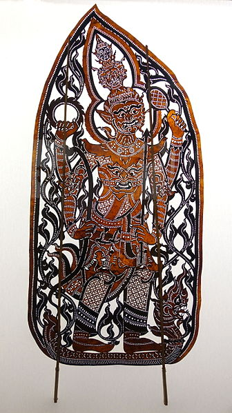
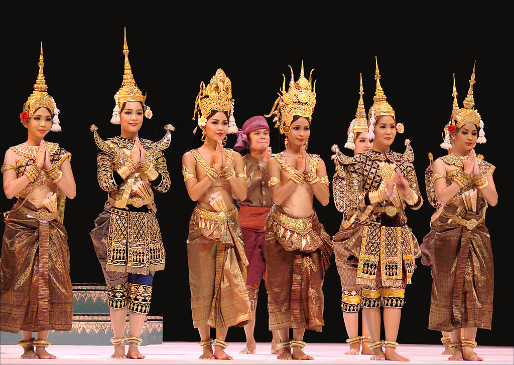
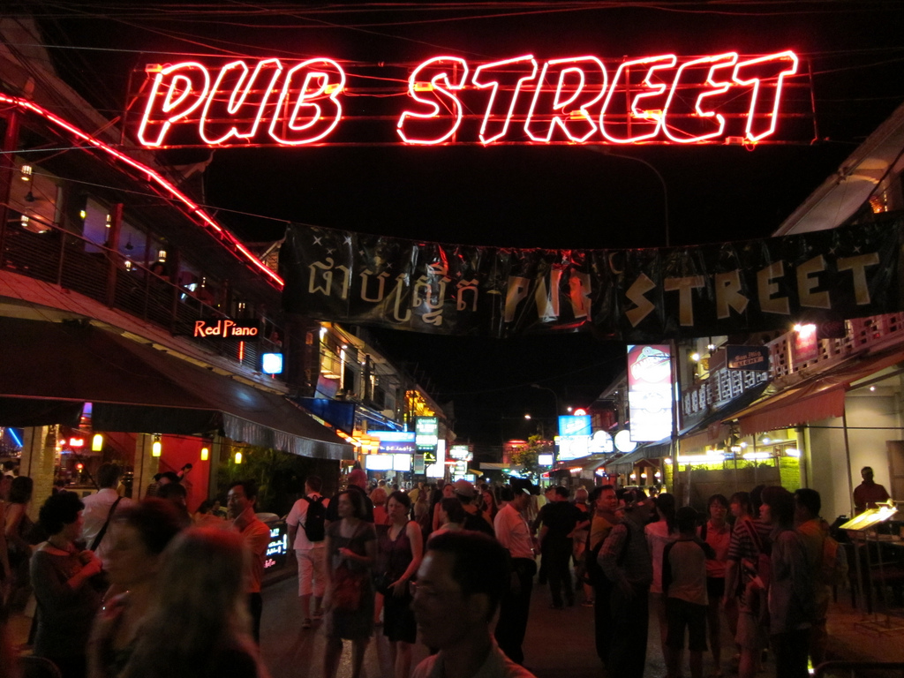
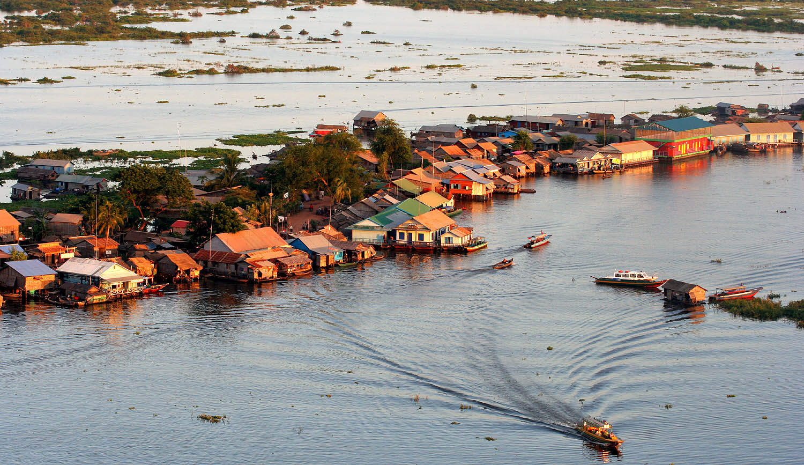
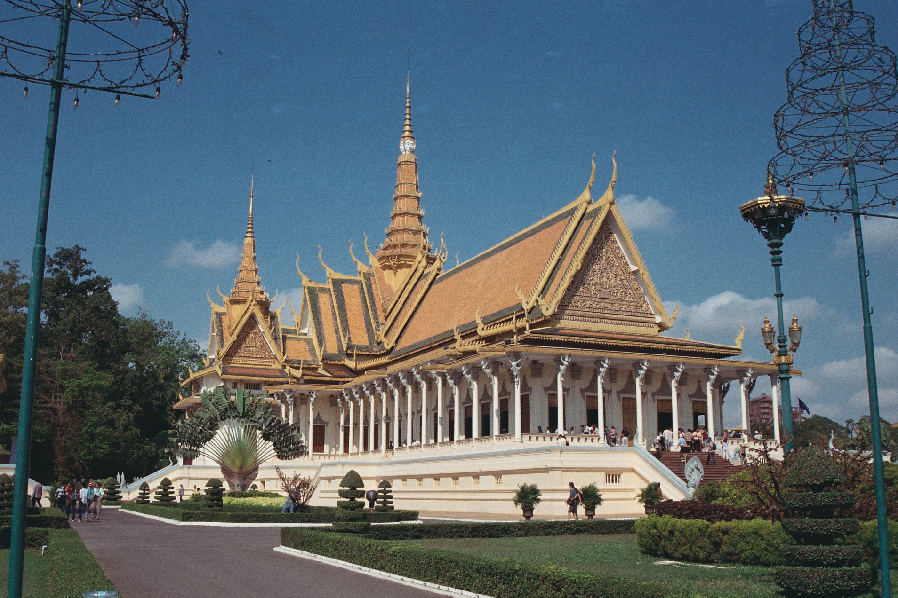

The Cambodgian is overflowing of places to visit.
Here is a list of things to do in Cambodgia.
Inscrit en 2008 sur la liste représentative du patrimoine immatériel de l’humanité, ce théâtre Khmer met en scène des marionnettes non articulé, faites en cuir ciselé, pouvant parfois atteindre la taille de 2m de haut. Datant de la période pré-angkorienne et considéré comme un art sacré, ces représentations de marionnette, était autrefois dédiées aux divinités, et elle n’étaient données que trois ou quatre fois par an. Après la chute d’Angkor au quinzième siècle, le théâtre d’ombres a dépassé le cadre rituel pour devenir une forme artistique, sans toutefois perdre sa dimension cérémonielle. Les représentations ont généralement lieu la nuit, en plein air, aux abords d’une rizière ou d’une pagode. Un drap blanc est tendu entre deux hauts mâts de bambou devant des projecteurs. Les silhouettes des marionnettes sont projetées en ombre chinoise sur cet écran blanc. Le manipulateur lui donne vie en effectuant des pas de danse et, un orchestre et deux narrateurs accompagnent l’action dramatique. Elles peuvent s’étaler sur plusieurs nuits consécutives et nécessiter jusqu’à 160 marionnettes pour un même spectacle.
Outil pour fabriquer des ombres représentant le personnage dessiné
Inscrit en 2008 sur la liste représentative du patrimoine culturel immatériel de l’humanité, cet art Kmer est renommé pour sa gestuelle gracieuse et ses somptueux costumes. Plus qu’une simple danse, cette art fait partie intégrante de l’histoire et de l’identité du peuple cambodgien. Cette forme d’art, qui a échappé de justesse à l’anéantissement dans les années 1970, est, de fait, vénérée par de nombreux Cambodgiens. Investie d’un rôle sacré et symbolique, la danse incarne les valeurs traditionnelles de raffinement, de respect et de spiritualité. Son répertoire immortalise les légendes fondatrices du peuple khmer. C’est pourquoi les Cambodgiens la considèrent depuis toujours comme l’emblème de la culture khmère. Le répertoire classique comporte quatre types de personnages : Neang la femme, Neayrong l’homme, Yeak le géant et Sva le singe. Chacun possède des couleurs, des costumes, un maquillage et des masques qui lui sont propres. La gestuelle et les postures, dont la maîtrise exige des années de formation intensive, traduisent toute la gamme des émotions humaines, de la crainte et de la rage à l’amour et à la joie. Un orchestre accompagne la danse, tandis qu’un chœur de femmes commente l’intrigue et souligne les émotions mimées par les danseurs.
Women performing in the Royal Ballet
For a relaxing evening, take a walk through the streets of Pub Street between pubs, restaurant and shop. You can attend traditional dance performances or test the fish pedicure.
Siem Reap's street pub
For the more educated, enjoy a visit to the Angkor National Museum. You will discover 1500 years of history from the establishment of the Funan kingdom in the 1st century AD, until the fall of the great Khmer empire. The museum is composed of different galleries retracing the golden age of the Khmer Empire:
National Museum of Angkor
On the banks of the Tonle Sap River, you will discover floating villages in which you can get lost and learn more about the local culture.
Village of Tonlé Sap
The Royal Palace of Phnom Penh is a must visit. The building is composed of huge golden roofs. The building dates back to 1860 and shows the technique and beauty of Khmer architecture.
Royal Palace of Phnom-Penh